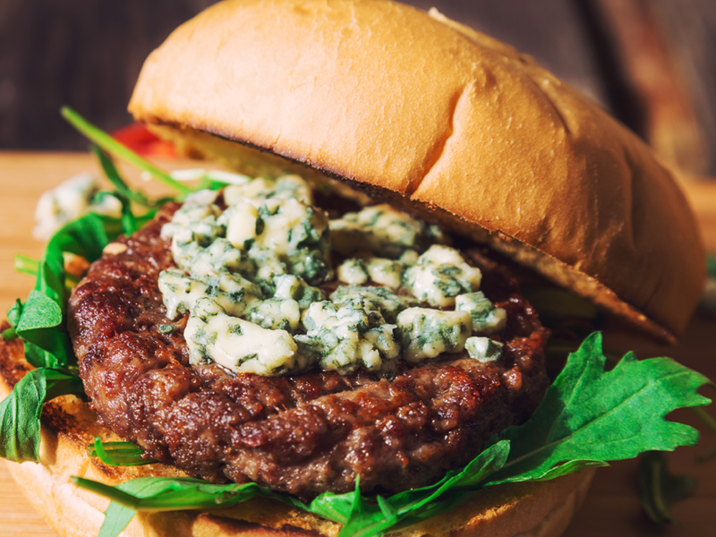

Blue Cheese Burger

Cheeseburgers are fun but why limit yourself to just a basic cheese burger?
Spice it up and have some fun with it!
That's what this recipe is all about, bringing a fun spin to the classic cheese burger.
Ingredients:
- 4 Tbsp of Salted Butter (room temperature)
- 3/4 Cup of BLue Cheese Crumbles
- 1 1/2lbs of Ground Beef (or Turkey)
- 2 Cups of Fresh Arugula
- 4 Hamburger Buns
- 2 Tbsp Kosher Salt
- 2 Tbsp Black Pepper
- 2 Tbsp Garlic Powder
- 1 Tbsp Paprika
- 1 Tbsp Onion Powder
- 2 Tsp Dried Rosemary
- 2 Tsp Dried Thyme
Directions:
- Grab a small bowl and mix the butter with the blue cheese. Blend with a fork. Set aside.
- Combine all the seasonings together in another bowl until you get a nice blend going. Set aside.
- Once those first two steps are done, mix them with your ground beef. You'll want to form four patties from this mix.
- Cover your four patties with plastic and place them in the fridge to set for an hour.
- Preheat your grill*, then add the patties, with some salt and pepper if you'd like.
- Grill each side for about 4-5 minutes.
- Use a meat thermometer and then let the patties sit for a few minutes if the temperature is accurate.
- You can now serve your patties! Don't forget to top them off with arugula. Enjoy!
*You can also use a stove but if you have the option, I recommend using your grill.